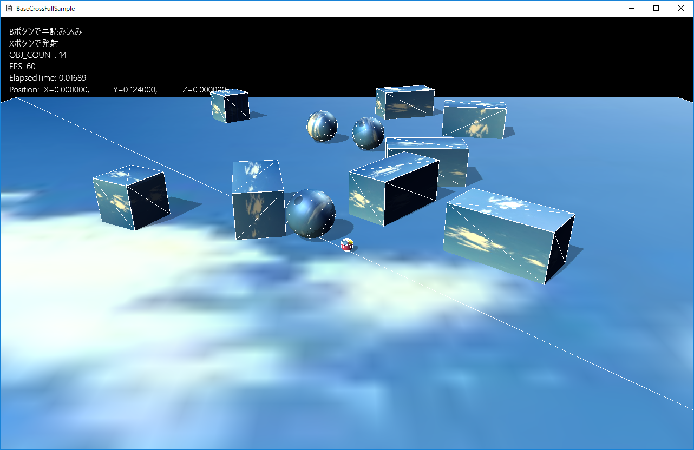

１１２．物理処理
このサンプルは
FullTutorial012というディレクトリに含まれます。
BaseCrossDx11.slnというソリューションを開くと
Dx11版が起動します。
リビルドして実行すると以下の画面が出てきます。

図0112a
物理ライブラリについて
いわゆる
物理ライブラリが、BaseCrossに実装されました。
他のどのフレームワークでも当たり前のようについている
物理ライブラリはこれまで（2017年12月まで）実装してきませんでした。
物理ライブラリもいろいろありますがBaseCrossでは
Sony Computer Entertainment社が著作権を持つ
PhysicsEffectsというライブラリを実装しました。このライブラリは
ゲーム制作者のための物理シミュレーション（インプレスジャパン）という書籍で紹介されているライブラリで、書籍のサイトからフリーソフト版（BSDライセンス）のものがダウンロードできます。
そのライブラリを
BaseCrossと相性がいいように若干カスタマイズしたものを使用しています。
サンプルについて
サンプルを起動すると、上記の画面が出てきます。上から物体が落ちてきます。物体同士はお互いに影響を受けながら、転がったりはじかれたりします。
Xボタンを押すと、プレイヤーが球を発射します。この球は物体と衝突すると、相手を飛ばしたり、あるいは自分が跳ね返ったりします。
Bボタンで
ステージの再読み込みが行われ、上から降ってくるところから再現することができます。再読み込みでも、プレイヤーの位置は保存されますので、近くから
降ってくる物体を見ることができます。
これらの物体の処理は
Character.h/cppで行ってます。配置はこれまでのように
GameStage::OnCreate()で行ってます。
球の発射は
Player::OnPushX()で行ってます。
物理コンポーネント
物理計算を実装するオブジェクトは
物理コンポーネントを実装します。
物理コンポーネントにはいろいろ種類がありますが、ここでは
ボックス用の
PsSingleBoxBodyと、
球体用の
PsSingleSphereBodyを使用します。
以下は、落ちてくるボックスである、
ActivePsBoxクラスの
OnCreate()関数です。
void ActivePsBox::OnCreate() {
auto PtrTransform = GetComponent<Transform>();
PtrTransform->SetScale(m_Scale);
PtrTransform->SetQuaternion(m_Qt);
PtrTransform->SetPosition(m_Position);
//影をつける
auto ShadowPtr = AddComponent<Shadowmap>();
ShadowPtr->SetMeshResource(L"DEFAULT_CUBE");
auto PtrDraw = AddComponent<BcPNTStaticDraw>();
PtrDraw->SetFogEnabled(true);
PtrDraw->SetMeshResource(L"DEFAULT_CUBE");
PtrDraw->SetOwnShadowActive(true);
PtrDraw->SetTextureResource(L"SKY_TX");
//物理計算ボックス
PsBoxParam param;
//DEFAULT_CUBEのスケーリングは各辺基準なので、ハーフサイズにする
param.m_HalfSize = m_Scale * 0.5f;
param.m_Mass = 1.0f;
param.m_MotionType = PsMotionType::MotionTypeActive;
param.m_Quat = m_Qt;
param.m_Pos = m_Position;
auto PsPtr = AddComponent<PsSingleBoxBody>(param);
PsPtr->SetDrawActive(true);
}
赤くなっているところが
物理計算ボックスのかかわる部分です。
PsBoxParam構造体に各値を設定し、
PsSingleBoxBodyコンポーネントの構築用のパラメータに渡します。
param.m_MotionType = PsMotionType::MotionTypeActive;
というのは、
アクティブということで、ほかの影響を受けます。それに対して、
FixedPsBoxクラスでは
param.m_MotionType = PsMotionType::MotionTypeFixed;
としています。こうしておくと影響は受けません。
ActivePsBoxでは
PsPtr->SetDrawActive(true);
となっています。これは
ワイアフレーム描画を行う設定です。つけなければワイフレームが描画されません。
以上で
ActivePsBoxの記述は終了です。
FixedPsBoxや
ActivePsSphereも同様の記述（コンストラクタ、デストラクタとOnCreate()関数のみ）です。
プレイヤー
プレイヤーはもう少し複雑になります。以下は
Player::OnCreate()関数（抜粋）です。
//初期化
void Player::OnCreate() {
//初期位置などの設定
auto Ptr = GetComponent<Transform>();
Ptr->SetScale(Vec3(m_Scale)); //直径25センチの球体
Ptr->SetRotation(0.0f, 0.0f, 0.0f);
auto bkCamera = App::GetApp()->GetScene<Scene>()->GetBackupCamera();
Vec3 FirstPos;
if (!bkCamera) {
FirstPos = Vec3(0, m_Scale * 0.5f, 0);
}
else {
FirstPos = App::GetApp()->GetScene<Scene>()->GetBackupPlayerPos();
}
Ptr->SetPosition(FirstPos);
PsSphereParam param;
//basecrossのスケーリングは直径基準なので、半径基準にする
param.m_Radius = m_Scale * 0.5f;
param.m_Mass = 1.0f;
param.m_MotionType = PsMotionType::MotionTypeActive;
param.m_Quat.identity();
param.m_Pos = FirstPos;
param.m_Velocity = Vec3(0);
auto PsPtr = AddComponent<PsSingleSphereBody>(param);
PsPtr->SetAutoTransform(false);
PsPtr->SetDrawActive(true);
//中略
}
まず初期位置ですが、上の赤くなっているところのように、バックアップがあればそれを初期位置に設定します。
BaseCrossでは
シーンが
ステージを管理します。
シーンはアプリケーション中、唯一のオブジェクトなので一種のグローバル変数はその中に記述することができます。
サンプルの
Sceneクラスには、
m_BackupCameraとm_BackupPlayerPosという2つの変数があり、
Bボタンが押されたときにこの値を設定して、
ステージの再読み込みをします。このほかにも
ゲーム中保存しておきたい変数などは
Sceneクラスに保存しておくとよいと思います。
物理コンポーネントの設定は
ActivePsSphereと同様ですが、
PsPtr->SetAutoTransform(false);
と、
自動でTransformコンポーネントを書き換える処理を
falseにします。
物理計算では
移動に応じて回転します。ここでは
falseに設定します。
実行画面をよく見るとわかりますが、プレイヤーを動かすと
ワイアフレームは回転しているのがわかると思います。
つまり
物理計算上は球体の移動は回転を伴うということです。しかしながら、このサンプルでは、
ボールの発射も行う必要があり、その計算にプレイヤーの回転値を使用するので
勝手に回転されては困るわけです。
プレイヤーの
OnUpdate()では、
移動処理のみ行います。ここで、コントローラに合わせて
PsSingleSphereBodyコンポーネントの
LinearVelocity（移動速度）を変更します。Y方向はジャンプしている可能性があるので、いじらないでおきます。
さて、
物理コンポーネントには
位置の設定である
SetPositionのような関数はありません。移動は
速度を変更するか
フォースを追加します。スタート位置に戻る、などの処理が必要な場合は、後ほど説明する
Reset()という関数がありますのでそれを利用します。
プレイヤーの処理では上記のように
PsSingleSphereBodyコンポーネントの値を変更してますが、これを
Transformに反映させなければ、正確な描画は行われません（SetAutoTransform(false);としているため）。ですので、
OnUpdate2()で、
PsSingleSphereBodyコンポーネントの内容を
Transformコンポーネントに伝える処理をします。これは
OnUodate()では行いません。というのは物理計算は
OnUpdate()とOnUpdate2()の間に行われるからです。
OnUpdate2()の時点での
PsSingleSphereBodyコンポーネントの各値が、描画されるべき値となっているので、ここで
Transformコンポーネントへの設定を行います。
void Player::OnUpdate2() {
auto PtrPs = GetComponent<PsSingleSphereBody>();
auto Ptr = GetComponent<Transform>();
Ptr->SetPosition(PtrPs->GetPosition());
//回転の計算
Vec3 Angle = GetMoveVector();
if (Angle.length() > 0.0f) {
auto UtilPtr = GetBehavior<UtilBehavior>();
//補間処理を行わない回転。補間処理するには以下1.0を0.1などにする
UtilPtr->RotToHead(Angle, 1.0f);
}
//中略
}
回転の設定は
UtilBehaviorクラスの
RotToHead()関数を行います。この関数は目標の
Angleに補間処理しながら、Transformの回転を設定します。補間処理が必要なければ
1.0を渡します。
ボールの発射
ボールの発射は
Xボタンで行います。
Xボタンのプッシュはあらかじめ
InputHandler構造体によって
ハンドラ化されているので（詳しくは
ProjectBehavior.hを見てください）、
Player::OnPushX()に記述します。
void Player::OnPushX() {
auto Ptr = GetComponent<Transform>();
Vec3 Pos = Ptr->GetPosition();
Pos.y += 0.25f;
Quat Qt = Ptr->GetQuaternion();
Vec3 Rot = Qt.toRotVec();
float RotY = Rot.y;
Vec3 velo(sin(RotY), 0.05f, cos(RotY));
velo.normalize();
velo *= 20.0f;
auto ShPtr = GetStage()->GetSharedGameObject<FirePsSphere>(L"FirePsSphere", false);
if (ShPtr) {
ShPtr->Reset(Pos, velo);
}
else {
GetStage()->AddGameObject<FirePsSphere>(Pos, velo);
}
}
ここでは、自分の位置と向きから、
発射位置（エミッター）と発射速度を計算して、
FirePsSphereクラスに設定します。もし
FirePsSphereクラスのインスタンスがなければ、ゲームオブジェクトを追加して、すでにあれば、そのインスタンスを使いまわします。ですので、ゲーム上に存在する
FirePsSphereクラスのインスタンスは常に一つ、ということになります。
さて、
FirePsSphereクラスの追加はわかりますが、
使いまわしをする関数、Reset()は以下のような内容になります。
FirePsSphere::Reset()関数です。
Character.cppにあります。
void FirePsSphere::Reset(const Vec3& Emitter, const Vec3& Velocity) {
auto PsPtr = GetComponent<PsSingleSphereBody>();
PsSphereParam param;
CreateDefParam(param);
param.m_Pos = Emitter;
param.m_Velocity = Velocity;
PsPtr->Reset(param, PsPtr->GetIndex());
}
ここでは、構築時にも使った
PsSphereParam構造体を初期化して、コンポーネントの
Reset()関数を呼び出します。
CreateDefParam()関数は、構築時と同じパラメータの部分をセットする関数です。
Reset()関数呼び出しの際、第2引数に
剛体のインデックスを渡します。これはコンポーネントの
GetIndex()関数で取得できます。
このようにして、同じオブジェクトを使いまわしにする場合は
Reset()関数を使用できるのがわかります。
またこの関数は、
スタート位置に戻るなどの場合にも使用できます。
物理コンポーネントは、前述したように
SetPosition()のような関数はありません。そのかわり
Reset()関数で位置を初期化することができます。
物理計算について
このようにチュートリアル012について説明してきましたが、そのコードを見ると、ほかのサンプルより、ずいぶん単純なのがわかると思います。
物理計算は、３Ｄ上の物体が、あたかも実在してるかのような動きを見せます。それも
物理ライブラリを使うことで、かなり少ない記述で実装することが可能になります。
それはそれでよいことなのですが、１つ落とし穴があります。
物理計算はゲームのルールではないということです。ゲームのルールを考える場合、物理計算を前提としてしまうと、そこから抜け出すことができなくなってしまいます。（できちゃったような気になってしまうのです）。
とはいえ、
物理計算という表演手段はとても魅力的なものです。ぜひ使いこなしてもらえればと思います。（物理計算については章立てでサンプルも記述する予定です）